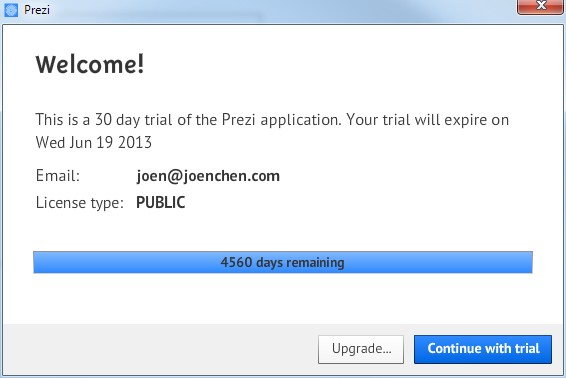

Prezi Desktop 5.0.5 5.2.8破解版
文章目录
前一段时间, 无意上传了一个Prezi 4.7版本的破解补丁, 没有想到效果出奇的好. 我看了下, 我网站流量的20%都是来自于这个破解补丁. 中国人, 伤不起啊. 说实话, 这个Prezi根本就是无心之作, 要用这个做演示, 所以随便破解了一下. 没有想到反响这么好. 好吧. 我也不好伤了广大人民群众的感情. 不少朋友给我发邮件, 希望我处理下5.05遇到错误提示的问题.. 好吧. 希望Prezi公司不会告我.
最新版本的Prezi 5.2.8又发布了. 下载地址是:
https://prezi-a.akamaihd.net/desktop/Install_Prezi_5.2.8.exe
破解补丁在这里下载.
http://www.joenchen.com/wp-content/uploads/2013/12/Prezi5.2.8.rar
喜欢人家的软件, 还是下载正版吧, 出了这么多版本了, 还没有中文版.. 多买正版支持下!
// ================================================================================================
// 这是5.0.5 旧版本的. 喜欢的可以下载这个.
目前Prezi 5.0.5的下载地址是.
http://prezi-a.akamaihd.net/desktop/Install_Prezi_5.0.5.exe
破解补丁我也上传下.. 可以支持这个版本. 原来使用 4.7版本的哥们. 换这个吧. 那个会提示 ”无法找到此应用所需的Adobe Air 版本。请从http://www.adobe.com/go/getair_cn下载该运行时的最新版本，或与应用程序作者联系，索取更新版本。
就是修改了一下获取时间的函数. 如果觉得人家的软件好. 还是购买正版吧..
http://www.joenchen.com/wp-content/uploads/2013/12/PreziCrack2.rar
使用方法是, 先安装上面下载的5.0.5文件. 然后切换到安装目录 xp下面是C:\Program Files \Prezi win7 下面是 C:\Program Files (x86)\Prezi然后解压PreziCrack.zip文件到安装目录下面, 替换文件. 就可以了.

文章作者 忆杰
上次更新 2013-12-24